Bio
Kyle McDonald
is an artist who works in the open with code. He is a contributor to arts-engineering toolkits like
openFrameworks, and spends a significant amount of time
building tools that allow artists to use new algorithms in creative ways. His work is very process-oriented, and he has made a habit of
sharing ideas and projects in public before they're completed. He enjoys creatively subverting networked communication and computation, exploring glitch and embedded biases, and extending these concepts to reversal of everything from personal identity to work habits. Kyle is a member of
F.A.T. Lab, community manager for openFrameworks, adjunct professor at
ITP, and has been a resident at the
STUDIO for Creative Inquiry at Carnegie Mellon, as well as
YCAM in Japan. His work is commissioned by and shown at exhibitions and festivals around the world, including:
Ars Electronica,
Sonar/
OFFF,
Eyebeam,
Anyang Public Art Project,
Cinekid,
CLICK Festival,
NODE Festival, and many others. He frequently leads workshops exploring computer vision and interaction.
Selected Work
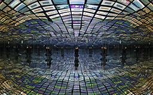
Social Soul
2014 with Lauren McCarthy
An immersive digital experience inspired by the question: how does it feel to be inside someone else's social media stream? Starts with the stream of the person visiting, then uses a custom algorithm to match participants, displaying their social stream instead. After exiting, users and their connected "soulmate" receive a tweet encouraging offline conversation.
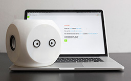
Noodle
2014 with Lauren McCarthy
A crowdsourced robot with the inputs and outputs of a computer but the thoughts and feelings of a person. Noodle uses a natural language interface to program mechanical turk workers, providing them with a body for influencing the real world.

Conversnitch
2013-2014 with Brian House
An eavesdropping lamp/lightbulb that livetweets conversations, using a small microphone with a Raspberry Pi that records audio snippets and uploads them to Mechanical Turk for automated transcription.
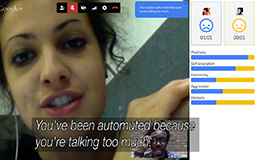
us+
2013 with Lauren McCarthy
A Google Hangout app that analyzes speech and facial expressions to improve conversation. Speech to text is handled by the Chrome Speech API, linguistic analysis is based on
LIWC and inspired by linguistic style matching research, facial analysis is based on the Hangouts Face API.

Going Public
2013
A one month performance coinciding with the Twitter IPO, where my Twitter profile is made publicly accessible by allowing anyone to tweet as "me" simply by direct messaging me a tweet prepended with a "~" (tilde).
FriendFlop
2013 with Lauren McCarthy
A browser extension for Chrome that scrambles the identities on your Twitter or Facebook timelines, dissolving your biases and reminding you that everyone is saying the same shit anyway.
Open Fit
2013 with Lisa Kori
Open source software that investigates several approaches to generating custom tailored pants patterns. Open Fit Lab is an experimental event where we use this software for on-the-spot generation and creation of custom clothes.
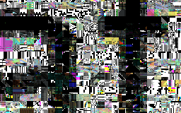
Roseheading
2013
Endless glitch facets of a "fractured, frozen" mosaic, a metaphor for our data in the cloud. Commissioned by
xo.
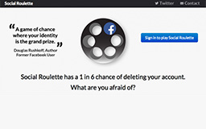
Social Roulette
2013 with Jonas Lund and Jonas Jongejan
A game with "a 1 in 6 chance of deleting your Facebook account", in fact a hoax that was shut down by Facebook for suggesting the possibility that your account is yours to play games with.
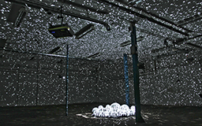
Light Leaks
2013 with Jonas Jongejan
A scattered array of fifty mirror balls reflect light from three projectors, filling a room completely with small reflections, casting patterns that fill the visitor’s peripheral vision. Creating a curious space that alternates between a meditative state, and an uneasy imbalance.
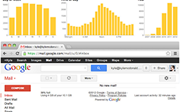
Inbox Zero Residency
2013
A one-week residency aimed at clearing my inbox, treating email answering as art, daily digital life as readymade performance. Daily reports on Twitter, supported by
GaOk in Seoul.
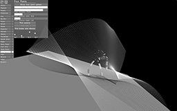
RAM Dance Toolkit
2013 with YCAM
A toolkit for dancers to communicate with each other in virtual environments. Includes functions to access, recognize, and process motion data to support creation of various scenes, and to provide realtime feedbacks to dancers with code, easily.
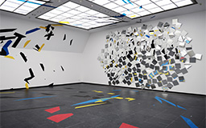
ExR3
2013 with Elliot Woods
An anamorphic analog interactive installation that exists coherently in a fractured, mirrored version of a reflected room visible from four points within the real space.
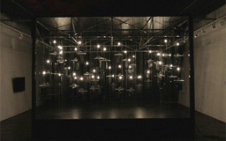
Missing
2012 with The xx, Matt Mets and Aramique
50 robotic speakers turn to face visitors, while a spatialized recording of The xx's song "Missing" follows them through the space.
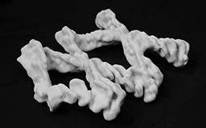
Mother
2012 with Inmi Lee
Digitally extruding hand gestures in response to linguistic cues as a method of experimental sound visualization.
Blind Self Portrait
2012 with Matt Mets
While the visitor keeps their eyes shut, a moving platform guides a pen in their hand to draw a self-portrait, using computer vision to track their face and generate a line drawing. The result is a machine-aided drawing, a self-portrait you could never draw.

subpixel
2012
A subway advertisement upgrade kit, built from laser-cut acrylic, rubber bands, and nine razor blades. It transforms a small patch of subway advertisement into an 8×8 grid of pixel stickers, ready for interaction with the public.
ScratchML
2012- with Jamie Wilkinson and Michael Auger
A format for describing turntablism, as well as tools for recording, analyzing, sharing, and even recreating scratch performances with giant robot arms. Initially built as a prototype in at the 319 Scholes
Art Hack Day.
Shadowplay
2011-
Experiments with shadow manipulation as an alternative interaction paradigm, exploring the unexpected results of structure in shadow, or form in emptiness. Shadowplay uses
ProCamToolkit which was co-developed by the
YCAM Interlab during a residency.
mapamok
2011-
An experimental projection mapping tool that minimizes the amount of time spent doing calibration. mapamok uses
ProCamToolkit which was co-developed by the
YCAM Interlab during a residency.
Face Substitution Research
2011-, with Arturo Castro
Real time face tracking and substitution experiments including a realization of the
Scramble Suit and an interactive installation
Faces that picks a new face for you every time you blink.

Pocket Topographies
2011-, with Chris Woebken
Ongoing experiments with pocket-sized topographical maps for visualizing geographic data in a physical form. The first piece shows a year of travel around NYC captured surreptitiously by an iPhone. Started during a residency at
MakerBot.

People Staring at Computers
2011
A photographic intervention. Custom app installed around NYC computer stores, taking a picture each minute and uploading it. Photos exhibited on site, full screen, on every computer.
Sharing Interviews
2011
Interview series about creators sharing work, with an emphasis on open source, media art, and digital communities. The interviews are conducted with EtherPad and stored on GitHub.
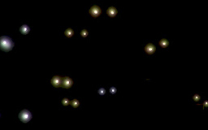
Eyeshine
2011 with Golan Levin
Interactive installation which captures, records and replays the retroreflections (red-eye effects) from the eyes of its observers. In doing so it presents an image wholly constructed through the process of being observed.
The Janus Machine
2010, with Zach Lieberman, Theo Watson and Daito Manabe
A 3d photo booth built from a structured light system. Janus is often depicted with two faces, each facing in opposite directions. Here: the real face, and the scan stored by the computer.

Only Everything Lasts Forever
2008-2010
Very long sound composition for MP3: an arrangement of every sound we can uniqely distinguish. An exploration of noise and emptiness, and the auditory implications of sound representation. An open source project towards an MFA.
Night Lights
2009
Building projection with crowd interaction in collaboration with
YesYesNo, featuring three different interaction modes over six different scenes, cycled every hour over five nights in Auckland, NZ.
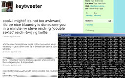
keytweeter
2009
One-year performance for custom keylogger, tweeting every 140 characters I type, ending June 30, 2010. An exploration of the boundary between "information" and "control", ubiquitous status updates, and personal identity.

Portrait Machine
2009, with Theo Watson
An interactive photography installation that visualizes the connections between visitors, reminding us of our connectedness and uniqueness, creating strong visual patterns and playful juxtapositions.
DIY 3D Scanning
2009-
Ongoing work democratizing realtime 3D scanning with structured light (one projector, one camera).
1¢ Grants
2009
A project to provide 100 grants at 1¢ cent each. Suspended early due to the high overhead cost of mailing pennies.

Vibrobyte
2008-2009
The Vibrobyte is a wireless haptic interface specialized for co-located musical performance. It was featured in "Telemorphosis" at
ICMC 2008. Technical details were presented at the
156th ASA Meeting and
NIME 2009.
I Eat Beats
2008-2009
Skittle-based beat sequencer, a tangible and edible music interface. v2 implements a generic control surface with the aide of a linear polarizer to cancel out the screen.

pppd
2009
An appropriation of computability theory. During each brief scene, a random sequence of p'' code is generated and run, while the memory it uses is visualized and sonified. An investigation of emergent behavior and computational dreams.

Please Remember Me When I'm Gone
2008, with Rebecca Weisman
Exploration of personality, death, and emptiness through a human-scale settlement of handmade dwellings combining video, electronics, and recorded voice. Colors from the sky as it moves from dusk to dark, and from dark to dawn, are sampled from video and routed into the huts.

Nandhopper
2008-
Ongoing noise synth explorations, with inspiration from the Kraakdoos, Theremin, Thingamakit, and BEAM electronics.

DIY 3D Interface
2008-
Ongoing work with DIY capacitive sensing for 3D interaction. v1 used an Arduino, aluminum foil, and six resistors.
Future Fragments
2008
An anti-time-capsule: quotes from seven fellow art students, transcribed phonetically and encoded as colors. Prints of these colors were carried by the artists for a summer. Decoded back into phonemes and re-formed into words, each text offers an indirect account of their respective journeys.
Musique Du Vent
2008
Reclaiming the entropy of unused dryer heat from a vent outside a freshman dorm, redirecting it into a discarded accordion. During the early Winter, the vent creates a small grassy space surrounded by snow. In March, it's mostly thick mud, but still unexpectedly warm and inviting.

Theremug
2007
An exercise in simplicity: the most basic capacitive sensor, using the smallest possible number of external components. Requires only an unshielded cable connected to a microphone input.
Empathy
2004
Early Processing work. Don't move too fast, you might scare it. Click to forgive and forget.